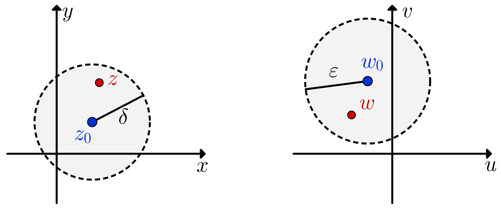

Sea $f$ una función definida en todos los puntos
$z$ en alguna vecindad borrada $z_0.$
Cuando decimos que el límite de $f(z)$ cuando $z$
se aproxima a $z_0$ es un número $w_0,$ o que
\begin{eqnarray}\label{limit001}
\lim_{z\rightarrow z_0}f(z)=w_0
\end{eqnarray}
significa que el punto $w = f (z)$ se puede hacer
arbitrariamente cercano a $w_0$ si elegimos el punto
$z$ lo suficientemente cercano a $z_0$ pero distinto de él.
Formalmente, la expresión (\ref{limit001})
significa que para cada (suficientemente pequeño)
$\varepsilon>0,$ existe
$\delta>0$ tal que
Considerando el mapeo $w = f (z),$ todos los puntos
interiores al círculo $|z - z_0| = \delta$ con $z_0$
borrado son mapeados a los puntos en el interior del círculo
$|w - w_0| = \varepsilon,$ ver Figura 1.
el límite existirá sólo si en el caso cuando $z$
se aproxima a
$z_0$ (esto es, $z \rightarrow z_0$) en cualquier
dirección arbitraria;
entonces esto implica que
$w \rightarrow w_0.$

Interpretación geométrica del límite.
Los límites son únicos cuando existen.
Supongamos que $\lim_{z\rightarrow z_0}f(z)=w_0$ y $\lim_{z\rightarrow z_0}f(z)=w_1$
con $w_0\neq w_1.$
Sea $2\varepsilon =|w_0-w_1|,$ de tal forma que $\varepsilon >0.$
Existe un $\delta>0$ tal que $0\lt|z-z_0|\lt\delta$ implica
$|f(z)-w_0|\lt\varepsilon$ y $|f(z)-w_1|\lt\varepsilon.$
Elegimos un punto
$z$ diferente de $z_0$ (porque $f$ está definida en una vecindad borrada de
$z_0$). Entonces, usando la desigualdad del triángulo,
$$|w_0-w_1|\leq |w_0-f(z)|+|f(z)-w_1|\lt2\varepsilon.$$
Pero esto es una contradicción. Por lo tanto $w_0=w_1.$
Ejemplo 1: Demuestra que
$$\lim_{z\rightarrow z_0}z^2=z_0^2.$$
Discusión:
Consideremos $\delta = 1.$ Así que $0\lt\left| z-z_0\right|\lt\delta=1$ implica
Ahora, si $\delta=\dfrac{\varepsilon}{1+2\left|z_0\right|},$ entonces $0\lt\left| z-z_0\right|\lt\delta$
implica que
$$\left| z^2-z_0^2\right|\lt 1+2\left|z_0\right|\lt\varepsilon.$$
Esto significa que
$$\left| z^2-z_0^2\right|\lt\varepsilon \quad\text{siempre y cuando}\quad 0\lt\left| z-z_0\right|\lt\delta$$
donde $\delta=\min\left\{1,\dfrac{\varepsilon}{1+2\left|z_0\right|}\right\}.$
Ahora podemos proceder a escribir la prueba formalmente.
Demostración:
Sea $\varepsilon>0.$ Elegimos
$\delta=\min\left\{1,\dfrac{\varepsilon}{1+2\left|z_0\right|}\right\}$ tal que
$0\lt\left| z-z_0\right|\lt\delta.$ Por lo tanto
$$
\left| z^2-z_0^2\right|\lt\varepsilon. \quad \blacksquare
$$
Existe una conexión entre los límites de funciones complejas
$f(z)$ y los límites de funciones de dos variable reales $g(x,y).$
Estas últimas se estudian en cálculo y podemos usar su definición
y propiedades, como la siguiente:
Considera
$f(z)=u(x,y)+iv(x,y)$
y
$z_0=x_0+iy_0,$ $w_0=u_0+iv_0.$
Entonces
\begin{eqnarray}\label{limitpart01}
\lim_{z\rightarrow z_0}f(z)=w_0
\end{eqnarray}
si y sólo si
\begin{eqnarray}\label{limitpart02}
\lim_{\left(x,y\right) \rightarrow \left(x_0,y_0\right)}u\left(x,y\right)=u_0\quad \text{y}\quad
\lim_{\left(x,y\right) \rightarrow \left(x_0,y_0\right)}v\left(x,y\right)=v_0
\end{eqnarray}
Demostración
Primero, supongamos que el límite (\ref{limitpart01}) es cierto.
Entonces, para cada número positivo $\varepsilon,$ existe un número positivo
$\delta$ tal que
\begin{eqnarray}\label{limpart05}
|(u + iv) -(u_0 + iv_0)| \lt \varepsilon
\end{eqnarray}
siempre que
\begin{eqnarray}\label{limpart06}
0 \lt |(x + iy) - (x_0 + iy_0)| \lt \delta
\end{eqnarray}
Pero
lo cual prueba que los límites (\ref{limitpart02}) se satisfacen.
Ahora, supongamos que los límites (\ref{limitpart02}) son ciertos y deseamos
obtener el límite (\ref{limitpart01}).
Los límites (\ref{limitpart02}) nos dicen que
para cada número positivo $\varepsilon,$ existe números positivos
$\delta_1$
y $\delta_2$ tales que
Esto es, el límite (\ref{limitpart01}) se satisface,
y esto completa la demostración del teorema. $\quad \blacksquare$
Ejemplo 2: Demuestra que el límite
$$\lim_{z\rightarrow 0}\dfrac{z}{\overline{z}}$$
no existe
Solución:
Supongamos que el límite existe.
Entonces podemos calcularlo considerando que el punto $z = x+iy$
se aproxime al origen de cualquier manera. Sin embargo, cuando
$z = x+i0$ es un punto diferente de cero en el eje real
$$f(z)=\frac{x+i0}{x-i0}=1;$$
y cuando $z=0+iy$ es un punto diferente de cero en el eje imaginario,
$$f(z)=\frac{0+iy}{0-iy}=-1.$$
De esta manera, si $z$ se aproxima al origen por el eje real,
encontramos que el límite es $1.$ Por otra parte,
si nos aproximamos por el eje imaginario encontramos que el límite es
$-1,$ lo cual es una contradicción porque el límite es único.
Por lo tanto concluimos que el límite
$$\lim_{z\rightarrow 0}\dfrac{z}{\overline{z}}$$
no existe.
Supongamos que
\begin{eqnarray}
\lim_{z\rightarrow z_0}f(z)=w_1\quad \text{y}\quad \lim_{z\rightarrow z_0}g(z)=w_2\label{limithypo}
\end{eqnarray}
Entonces
\begin{eqnarray}
\lim_{z\rightarrow z_0}\big[c\cdot f(z)\big] &=& c\cdot \lim_{z\rightarrow z_0} f(z) \text{ with } c\in\C, \label{limitconst}\\
\lim_{z\rightarrow z_0}\big[f(z)+g(z)\big]&=&w_1+w_2,\label{limitsum}\\
\lim_{z\rightarrow z_0}\big[f(z)g(z)\big]&=&w_1w_2;\label{limitmult}
\end{eqnarray}
y, si $w_2\neq 0,$
\begin{eqnarray}\label{limitdiv}
\lim_{z\rightarrow z_0}\frac{f(z)}{g(z)}&=&\frac{w_1}{w_2}.
\end{eqnarray}
Demostración
Para demostrar la propiedad (\ref{limitsum}),
debemos mostrar que para cada $\varepsilon >0$ podemos encontrar
$\delta >0$ tal que
Para estimar cada término, elegimos $\delta_1\gt 0$
de tal forma que $0\lt \left|z-z_0\right|\lt \delta_1$ implica
$\left|f(z)- w_1\right|\lt 1,$ y de esta manera
$\left|f(z)\right|\lt \left|w_1\right|+1,$ dado que
$$\left|f(z) - w_1\right|\geq \left|f(z)\right|- \left| w_1\right|.$$
Dados $\varepsilon\gt 0,$ tomemos $\delta_2$ y $\delta_3$ tales que
$0\lt \left|z-z_0\right|\lt \delta_2$ implica
$$\left|f(z)-w_1\right|\lt \frac{\varepsilon}{2\left(|w_2|+1\right)}$$
y
$0\lt \left|z-z_0\right|\lt \delta_3$ implica
$$\left|g(z)-w_2\right|\lt \frac{\varepsilon}{2\left(|w_1|+1\right)}.$$
De esta forma podemos elegir $\delta = \min\left\{\delta_1,\delta_2,\delta_3\right\}.$
Si $0\lt \left|z-z_0\right|\lt \delta,$ entonces
Este libro interactivo es gratis para todo el mundo,
porque tengo la firme creencia de que
cualquier persona debería tener acceso
a recursos de aprendizaje de alta calidad para explorar y aprender
matemáticas.
Es por esta razón que muchos usuarios han elegido contribuir
a mis esfuerzos. Si tú crees en lo que hago y deseas ayudarme
en mi jornada, puedes hacerlo ahora con los siguientes enlaces:
Tu ayuda me permite mantener este sitio
y crucialmente, garantizar que permanezca de acceso libre
para toda persona interesada en explorar esta cautivadora rama de las
matemáticas - sin anuncios que te distraigan.
No puedes contribuir en esta ocasión, ¡no hay problema! Quizá sólo quieras
Mandar un comentario
=1/z")